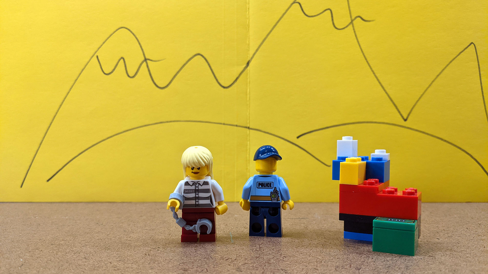
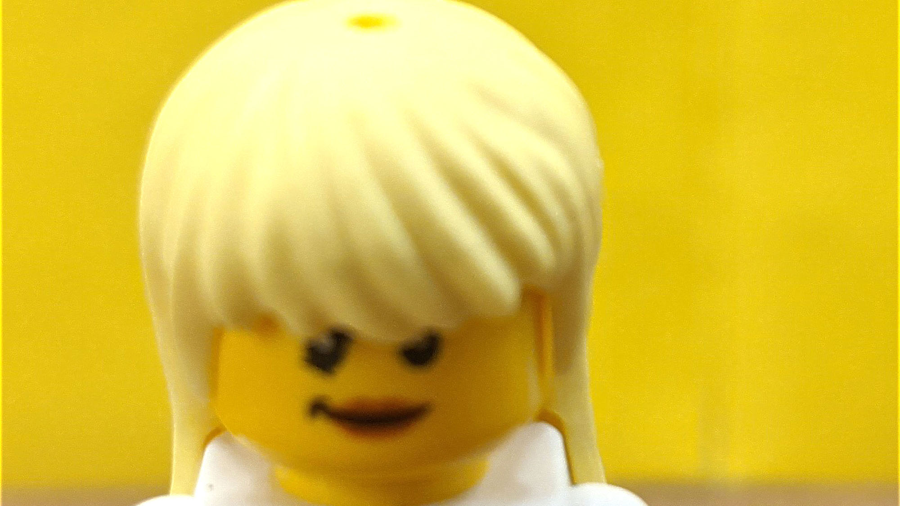
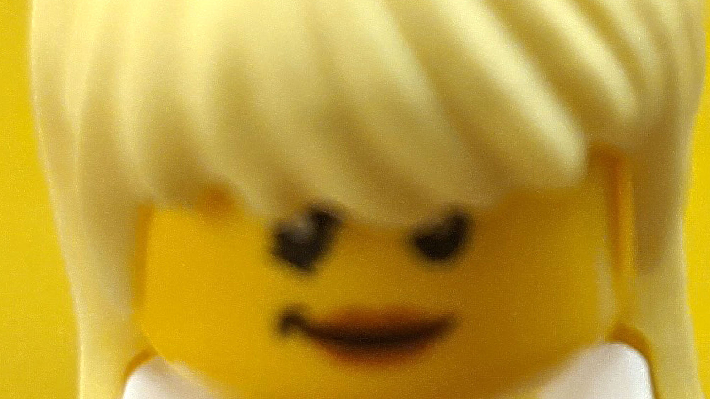
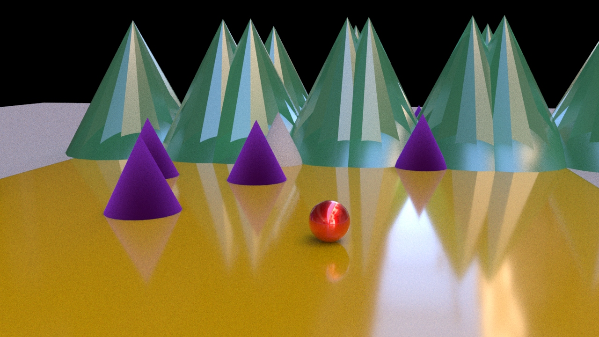
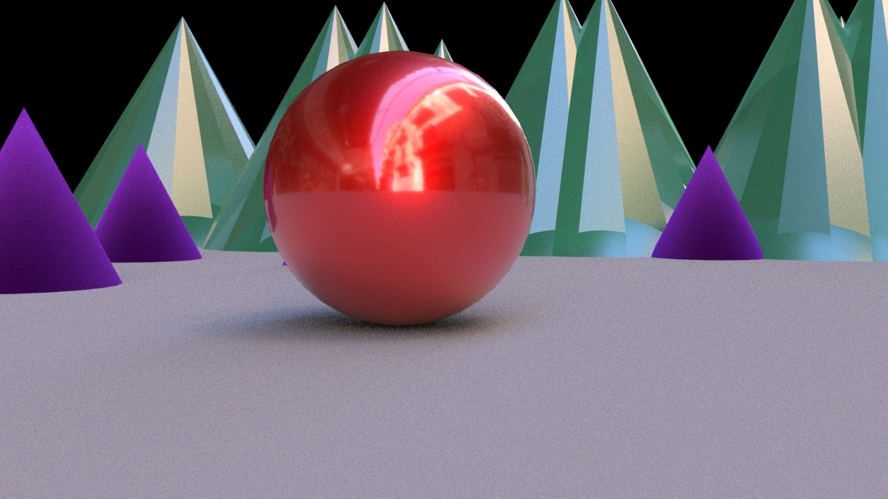
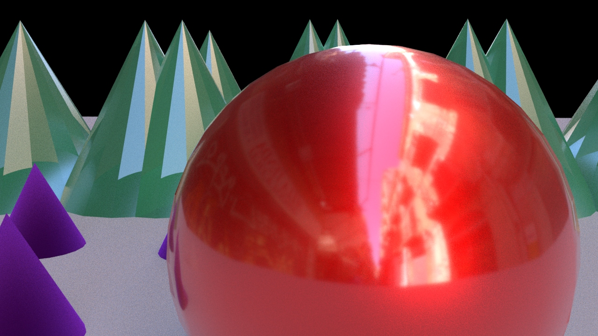
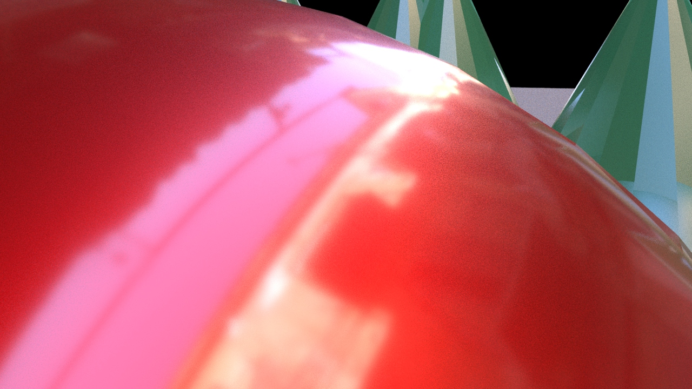

15 - 30 Second Animation in a 3D Environment
What am I Turning In Next Week?
- Story Spine - Story Spine Instructions
- Storyboards drawn and scanned in - Storyboard Instructions
- Animation Set(s) Modeled in Maya - (Upload as a Maya Scene Archive) - Animation Set Model Instructions
- Rendered Image of Animation Set - Set Render Instructions
Google Drive Upload Folder
https://drive.google.com/drive/folders/1niAbxelqqAhaDQe5KtVib4nJS1qLBv5e
What am I Turning In Last Day of Class?
- Rendered image sequence of animation (folder of images exported from Maya) - Animation Instructions
- Edited and Exported mp4 video of Edited Animation with Sound and Music - Video Editing Instructions
Google Drive Upload Folder
Requirements
Must be a ~15-30 second long video composed in Adobe Premiere using images created and rendered in Autodesk Maya.
- Include multiple animated sequences from Maya.
- Have a ball character, may include additional characters.
- Have a structure, does not have to be a traditional narrative but must have story structure.
- Use 3 different camera angles in Maya
- Have multiple scenes.
- Have UV mapped objects with textures created by you in Maya, Substance Painter, Photoshop or other image software.
- Must show basic animation principles such as squash and stretch.
- Include sounds created by you.
- Include music from public domain or created by you.
- Have animated text as credits or intro.
Objectives
Your objective is to demonstrate an understanding and competence of composition and other fundamental visual concepts as applied to moving art and sound. In addition you should demonstrate an ability to use basic principles such as squash and stretch. Create a purposeful composition. Use a variety of shots and camera angles. Use well-considered visual themes, including colors and general style of visual treatments and elements.
Draft a Story Spine that follows a basic narrative arc. This will give you guidelines and a plan to make your animation. Use the story spine to draw storyboards of the scenes and different camera angles that you want to use.
Create a 3D environment or “animation set” of 3D modeled objects. This Environment should be real world scale and be interesting enough to use as a setting for your bouncing ball animation. You can model different items for your scene and combine the meshes and group them together. You can save the items all in one Maya scene or save each item as a different scene and import them into your main scene.
Use the UV mapping editor in Maya to map the UVs of your objects and export UV snapshots for importing into Photoshop. Paint textures onto the UV snapshots and export the new textures to your “sourceimages” folder in your Maya project. Apply the Textures and edit as needed. You can also use Adobe’s Substance Painter to add detailed textures. Smooth your object and then save it as an .obj file to import into Substance Painter. Then you can use all of the materials in Substance Painter.
Add lights to the scene. Make sure to only add “Arnold Lights.” Do not use any of the older Maya lights or you will not be able to use the CIA Render Farm. Remember that you will have to increase the exposure of the lights to make your render show up in the Arnold Renderer.
Add multiple cameras to the scene. Animate a bouncing ball that travels through the scene in an interesting way. Use the animation principles of squash, stretch, exaggeration, anticipation and follow through. Use a minimum of 3 different camera angles and shot types. to apply textures to your objects. Export the different camera angles as separate sequence renders.
Narrative Arc
What is a Story Spine?
Link to Blank Fillable Story Spine Sheet
Spend a few minutes to write a brief Story Spine that follows a narrative arc. Remember that the project does not have to have any narrative structure. It can also be an abstract visual experience. Nevertheless any sequence of images will have some structure even if that structure is to intentionally disregard structure. Think of your structure as having 3 parts.
In part 1 explain the setting of the animation. Where is it? What is seen? What is happening? What is the subject?
In part 2 introduce a problem, conflict or goal. Where is the ball going? What does the ball want to do? Is everything exploding and on fire? Or is is a tranquil and peaceful setting where the problem is that the ball is bored?
In part 3 resolve part 2. What is the result of the actions of the ball after encountering part 2? How does the ball escape the fire or stop being bored?
Writing a Story Spine and Storyboards will give you an outline and direction as you produce your animation materials. Rather than working with everything possible in the universe, the Story Spine and Story Boards will narrow the scope and set limitations that you can work creatively within.
What is a Story Arc?
A traditional story arc contains an introduction of the story, plot, characters and setting. This is called the Exposition. This leads into the Rising Action when the character is faced with a problem. The character then confronts obstacles along the way toward the Climax of the story, a moment of crisis that directs the rest of the plot. This is followed by Falling Action as the plot moves from climax to the ending. Finally a Resolution occurs and stability returns to the story.
- Exposition – intro of plot, characters and setting
- Rising Action – multiple incidents occur providing suspense and tension
- Climax – moment of crisis that directs the rest of the plot
- Falling Action – plot moves from climax to ending
- Resolution – final results of plot - stability returns
Story Spine Structure
A story spine is a concept created by Kenn Adams in the book “The Art of Spontaneous Theater.” It is a simple outline with prompts that assist a storyteller develop a structure for their narrative. We will use this 9 part structure to develop our animations to have 3 simple acts.
3 Act Narrative Story Spine Structure
You will use the story spine as the foundation for your 3 act narrative structure.
Act 1 – The first 3 parts of the story spine
This act sets the scene, introduces characters, shows how the world works. The act leads up to having have the rising action of “But, one day…”
- Once upon a time…
- Every day…
- But, one day…
Act 2 - The Journey or the “Because of that…” Sequences
Show the journey of the character and how they overcome obstacles that they encounter. Often includes a low point of the character’s journey. Hardship comes to the character as they experience a low point. A series of challenges is presented that lead to the climax or a fork in the road where a decision must be made. After this diction is made that there is often no going back.
- Because of that…
- Because of that…
- Because of that…
Act 3 - Heading toward the climax and resolution
The characters must make a choice to overcome the obstacles of Act 2. This the “Until, finally…” climatic moment of the story arc. This moves the story toward conclusion and resolution. The character demonstrates learning and growth. This often demonstrates the moral of the story.
- Until, finally…
- And, ever since then…
- And the moral of the story is ….
Storyboards
Link to Printable Storyboard Sheets You can print these for free in black and white in the classroom or in the library.
Make storyboards for your animation. Since the animation is 15-30 seconds long, you need a minimum of 15 storyboard panels. Remember to change angle and scale for each shot / scene / animation.
You can print out the template from the course Google Drive Handouts Folder. To have 15 storyboard panels you need to use three pages of the storyboard template. Write down the type of shot on each panel. Write a brief description of what is happening. If you have a 15 second animation then each storyboard panel represents 1 second of animation. If you have a 30 second animation then each storyboard panel represents 2 seconds of animation. Plan accordingly so you do not have too much action or too little action.
Scan your storyboards as a PDF. Label the PDF YYYYMMDD Lastname Firstname 3D Animation Storyboards.pdf. Upload to the Google Drive Folder.
Make an Animation Set(s) & Assets
1. Make a List of Needed Assets
After you make your storyboards, make a list of the items and settings for your animation. Is there a boat and water? Is there a box of donuts? Does the ball sit on a shelf? Think of the simple shapes and polygons that can start to make these objects. A box of donuts could start with a scaled cube and a bunch of torus primatives in it, a shelf is just multiple scaled cubes, a boat is a bit more complex but is an elongated cube with some vetecies moved around.
2. Set Your Maya Project
Before you begin making any objects in your Maya scene, make sure you set your project. We did this in class but you should go to File > Set Project and then choose your project folder everytime you start working in Maya. This makes sure you are working with the right files and folders. Always move a texture or external file into your project folder before importing into Maya.
3. 3D Model Objects
After you set your Maya Project, begin to create the assets that you need for your animation set. This includes objects, a ground plane, things in the background, walls, hills, etc. You can make multiple scene files and combine them or make everything in one scene file. Sometimes it is better to make an object as its own scene file and then import it into your main animation set scene file. This videos shows how to import and reference other scenes into your main scene. How you organize your files is up to you as long as all files are in your project folder.
Model multiple 3D objects to create an interesting visual environment to animate in. Add walls / furniture, rugs, chairs, tables, buildings and other objects forms. You setting(s) can be indoors or outdoors or both. Making a new scene file for different settings is a good idea. All scene files should be in your project’s scenes folder. Think
4. Add Materials and Textures
After you finish modeling your objects, combine all the mesh parts with Mesh > Combine. Then delete the history and freeze the transformation. This video shows how to delete history and freeze transformations. You will do tis multiple times on different objects as you model and make changes. Begin to add materials and textures to the objects in your scene. You can right click on your different objects while in Object Mode. Then select “Assign New Material”. Click on Arnold in the menu and then select aiStandardSurface. In the Attribute Editor change the name of the aiStandardSurface to the name of your object. You can add “Shader” to the end of the name. Then select a color or a preset.
You can also add textures by 3D Painting in Maya. First unwrap your object’s UVs and then assign a new Blinn material. The Maya 3D paint tools do not work on aiStandardSurface. This video shows how to 3D paint in Maya
Don’t forget about using photo-based materials / textures. You can easily create seamless textures in Photoshop and then add them to your shader by clicking on the icon by color in the attribute editor of your shader. This video shows how to create seamless textures in Photoshop.
You can also UV unwrap your model and export it as an OBJ file to texture in Substance Painter. This video shows how to quickly UV unwrap your object and export a OBJ file. Substance Painter is installed on the lab computers but you will need to download it from the Adobe Creative Cloud if using your laptop. Create a new file in Substance Painter, select the top default template and then select your exported OBJ file. Paint the textures you want and then export your textures to your “sourceimages” folder in you Maya Project. You can use the Substance plugin in Maya to assign your textures to a new material and then assign that material to your object. This video shows how to make and export textures with Substance Painter.
5. Add Lights
If you try to render your animation scene with the Arnold Render view, everything will be black because there are no lights in the scene. You need to add lights from the Arnold lights menu. Only add Arnold lights. Do not add any Maya lights. If you select lights from the Arnold menu then you will only add Arnold Lights.
For a quick view of your set you can add a simple skydome light. This will light the whole scene evenly but is not the most interesting lighting. Instead of a skydome light or artificial sky light, add multiple Arnold Area Lights. These are flat squares like LED light panels. Press “r” on your keyboard to scale the lights up and press “e” to rotate them towards your objects, then press “w” to move them into position. In the attribute editor the default exposure value for Area lights is 0.00. You need to increase this to somewhere between 8.00 and 16.00 (You scene may be different and may need more or less exposure). Each time you increase the exposure value it is like 1 F-stop on a camera and it doubles the amount of light.
Place as many lights as you need in different places in your scene. Vary the intensity and color of the lights. It is a good idea to label the lights with descriptive names in your Outliner on the left hand side of the screen so you don’t get confused.
6. Add a Renderable Camera
After you add lights, then you should add a new Render Camera. This video shows how to add a renderable camera to your Maya scene. You can look through this camera and position it for your scene. Then you can lock the camera so it does not move. Then you can switch back to the default perspective camera to continue modeling and editing your scene. Label the new camera that you created and then make sure to select it in the Arnold Renderview Window.
Add multiple cameras for the different shots and animations you want to create. You may want to make duplicate scenes for different actions. This video shows how to add multiple renderable cameras to your scene.
7. Make a Minimum of 1 Render of Your Animation Set(s)
After your lights and camera are set up, make and save a high resolution, high quality render of your scene. The default render settings are too low for presentation but are good for quick renders. To export your high quality render you need to change the render settings before rendering.
Change the render size to a minimum of HD_1080 1920x1080 and increase the Arnold - Camera (AA) samples to at least 5. Remember to changes this back to the default HD_540 and 3 samples so your test renders go quickly while modeling.
8. Make an Archive ZIP of Your Scene
After you create your scene. Archive the Maya scene with the Maya scene archiver. If you do not archive the scene, then texture files will not be attached and you will only have the model data. To archive your scene, with your scene open, go to File > Archive Scene. This will create a zip of your scene and any needed texture files. It will create a zip file in your Project’s scenes folder. This video shows how to archve a Maya scene.
Label this zip file as YYYYMMDD Lastname Firstname Archived Set Scene.zip Turn in to the class Google Drive Folder.
Develop Your Story and Visual Experience
Think about movies, cartoons or video games that you have experienced? Is everything shown in one static camera shot? Of course not. That would be boring and uninteresting. The same thing holds true for your animation projects. Use multiple cameras and camera angles to break up your story and show different parts with more detail. Use wide establishing shots to set the scene. Your audience will piece all the shots together in their mind and create a convincing 3D world to experience your story in.
Shot Types / Camera Angles
- Long Shot / Establishing Shot - Sets up the scene and gives the viewer a visual understanding of the environment around the subject
- Full Shot - All of the subject is visible in the frame but is closer than a long shot
- Medium Shot - the bottom of the frame is barely above or barely below the waist of the subject and the entire head and torso is in the shot
- Close Up - Usually cuts off the top of the head of the subject and shows just a bit of the shoulder line
- Extreme Close Up - Crops in to frame the subject’s chin and forehead
Examples of Shot Types

Establishing Shot

Full Shot

Medium Shot

Close Up

Extreme Close Up
How Does This Work for a Ball?
Using a simple shape like a ball as the subject of a composition does not change the shot types. There are still establishing shots and close ups. By changing the angle and distance of the camera the ball takes on new feelings and meaning.

Establishing Shot

Full Shot

Medium Shot

Close Up

Extreme Close Up
Camera Angles
Think of the shot types above as changing the size of the frame or changing the size of the available composition. In addition to shot types, you can also change the angle of the camera or the placement of the camera to alter the viewer’s perspective. The shot type and camera angle can be changed independently
Common camera angles include aerial shots, bird’s eye perspective and low angle shots also know as worm’s eye view.
Your animation must use a minimum of 3 different shot types. It is a good rule of thumb to change the shot type and the angle of the camera for each scene, camera cut or panel of your storyboards. This keeps the viewer engaged with your visuals.
Rule of Thirds
This is a compositional rule of thumb. Divide the composition into 3 equal vertical sections and 3 equal horizontal sections. These sections are made by drawing 2 horizontal lines and 2 vertical lines each spaced evenly apart. The concept of the rule of thirds says that a composition is more dynamic and interesting if the main subject matter is placed on these composition lines or at the intersection of these lines. A brief survey of popular media will show this concept in wide use.
Use the rule of thirds when composing your shots and sequences.

Left image is original, right image is cropped with rule of thirds. Link to Wikimedia Commons
{kind=link}
Animate
Create Character(s)
You are required to make a simple ball character. This could be a simple sphere polygon with a texture applied. It could be a tennis ball, volley ball, soccer ball or golf ball or a teddy bear from the tutorial videos. It could be a sphere that you have sculpted spikes or fur onto. As long as it is generally round and can be animated with squash and stretch. It does not have to roll but it can. It could bounce or “jump” everywhere. Attach a squash and stretch animation rig to this ball character.
Apply textures to the ball that you 3D Paint in Maya, create in Photoshop or Substance Painter. This video shows how to make and export textures with Substance Painter.
After you create your ball character you can make any other characters or objects to animate. Make additional stuff to be in your scenes to make it more visually interesting.
Animate Your Characters
After you have all your animation assets. Begin to animate. Remember that other things in the scene can move as well. Anything can animate. You can change the positioning of lights. The environment can change, the camera can move around.
We will use a basic animation rig for your ball. This will simplify your animation tasks by separating the squash / stretch from the rotation and position. You can make other rigs for other elements in your animation if you want. This video shows how to make a ball animation rig.
We will animate using keyframes. You can set keyframes in the channel box for individual parameters by right clicking and selecting “key selected”. You can set all keyframes for a selected object by pressing “s” on your keyboard. You can also turn on automatic keyframes so it sets a keyframe everytime that you move the timeline and move your objects. This can be helpful but can also result in way to many accidental keyframes. This video shows how to animate a bouncing ball.
Don’t forget that you can animate the camera as well. Camera motion, even if just a little bit can really make your scene come alive. You can layer tha background and foreground objects and have the camera “dolly” or move sideways to create a 3D parallax effect. By animating the camera, everything on the screen will have some motion.
You can also animation the position and intensity of lights. Your imagination is the only limit.
As you finish different animation sequences, export them as rendered image sequences.
Import into Premiere and Edit Video
After you have the different scenes of your animations exported as a series of images import them into Adobe Premiere for editing. You can import a folder of images as an image sequence and premier will treat it as a video file. Video editing allows you to jump back and forth from different camera angles. You could simply set up 4 cameras in Maya, export each camera’s view of your animation and then cut them together in Premiere. This is where you will add pacing to the cuts of your scenes and shots. This video shows how to setup and organize your Premiere Project.
Add Music and Sound
In addition to rich visuals, adding music and sound to your animation will make it come alive. This video shows how to add sound effects to your video. We will your Creative Commons Licensed music and sound effects to make the objects in our animation seem more real. We will also create our own sound effects. All CC licensed music and sounds must have proper written attribution in the credits at the end.
- Adobe Sound Effects: https://www.adobe.com/products/audition/offers/AdobeAuditionDLCSFX.html
- FTP of Adobe Music Loops and Beds (Must use FTP to download) - ftp://ftp.adobe.com/pub/adobe/audition/Loops/
- Kevin McLeod’s Music: https://incompetech.com/music/royalty-free/music.html Remember to credit Kevin’s music exactly as he requests.
Export an .mp4 of You Animation
Use the h.264 video codec to export an .mp4 of your animation and label the file YYYYMMDD Lastname Firstname 3D Animation.mp4
Project Resources
Technical Reminders
- Make a Maya Project and always set your project when working
- Put all your files, including your textures and other images into the proper folder structure for your Maya project.
- Use the increment and save feature of Maya.
- Delete the history of objects in your scene when not needed to keep Maya from crashing and running slow.
- Do NOT delete the history of any object after you rig it, you should delete the modeling history before rigging.
- Create a separate folder for your Video Editing
- Copy all needed files (image Sequences, sound files, etc.) into this Video Project folder.
- Save your Premiere project file in your Video Folder
- Save all project files in that folder. Do not rename files after importing them. Do not move files after importing them.
Instructional Videos
Maya User Interface Introduction
Maya Polygon Modeling Tools
Make Hole in Cube
Polygon Modeling Exercise
Three Point Lighting for Rendering
UV Map a Cube
Create Seamless Textures
Basic UV Mapping
Sphere Ball Rig
Quadball Rig
Insert Reference Image
Model a Teddy Bear
Model Soccer Ball
Model Golf Ball
Model a Volley Ball
Model a Tennis Ball
3D Cut and Sew UV Unwrap
Ball Bounce Animatinon
Ball Bounce Physics
3D Paint Tool
Paint 3D Object
Add Render Camera
Render Image Sequence
Import Image Sequence Premiere
Time Slider Settings
Import vs Reference Assets
Multiple Renderable Cameras
Set Up Premiere Video Editing Project
Add Sound Effects
Grading Rubric
| Assessment | Weight |
|---|---|
| Have Multiple Scenes | 50 points |
| Show Basic Animation Principles | 50 points |
| Folder of Exported Rendered Images | 25 points |
| Use of Lighting and Rendering | 25 points |
| UV Textures Applied to Objects | 25 points |
| Use Sound Effects and Music to Enhance Animation | 25 points |
| Text Credits | 25 Points |